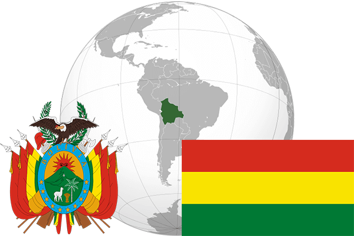

To`liq nomi: Ko`pmillatli Boliviya davlati
Region: Janubiy Amerikani markaziy qismi
Qonunchilik shakli: Respublika
Mustaqillik kuni: 6-avgust 1825-yil Ispaniyadan
Poytaxti: Sukre
Maydoni: 1 098 581 km² (dunyoda 27 -o`rinda )
Chegaradosh davlatlari: Peru, Braziliya, Paragvay, Argentina, Chili
Aholisi: 10 461 053 (dunyoda 82 -o`rinda ) 2013 -yil roʻyxat
Aholi zichligi: 9,9 /km²
Aholining o`rtacha yoshi: 66,25 yil ( 69,00 ayollar, 63,50 erkaklar)
Rasmiy tili: Ispancha, Aymara, Kechua
Dini: Katolik
Pul birligi: Baliviano
Telefon prefiksi: +591
Internet domen: .bo
Xalqaro tashkilotlarga a`zoligi: BMT (1945 –yildan)
Dengiz va okeanlarga chiqishi: yo`q
YIM: Butun: $ 43,570 mlrd, Jon boshiga: $ 4345 (2012 - yil roʻyxati)
Yirik shaharlari: Santa-Krus-de-la-Serra, El-Alto, La-Pao, Kochabamba